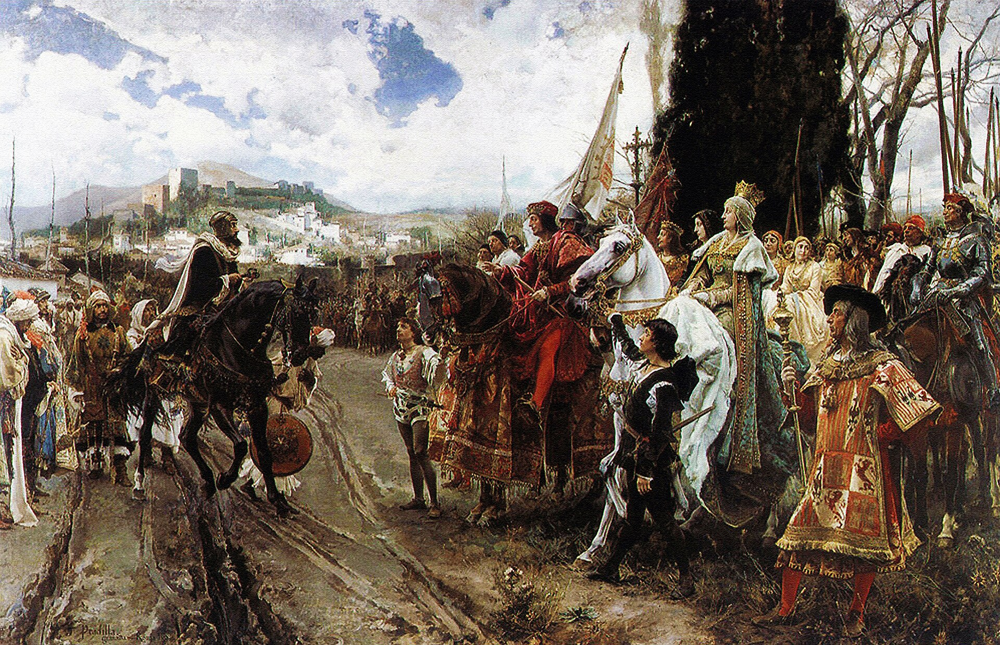

From the Alhambra to the Atlantic
How the fall of al-Andalus helped create the circumstances in which Columbus sailed west.
Read articleBeyond the timeline
Welcome to the hidden archives of our website, where the past meets the curious and the random converges with the intriguing. Browse around—who knows, you might just unearth a digital relic that piques your interest!